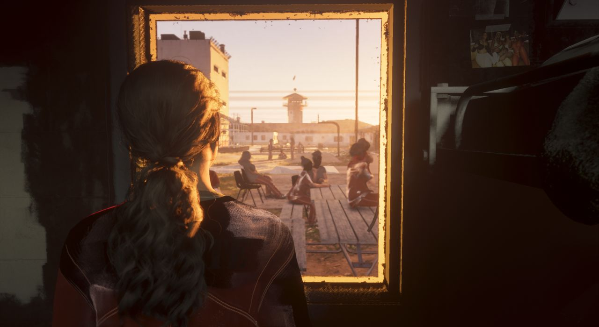
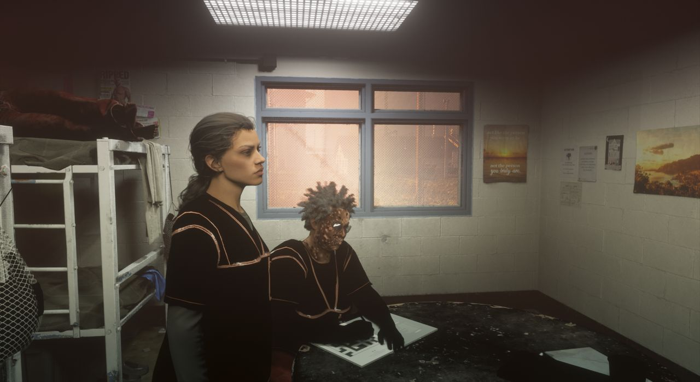
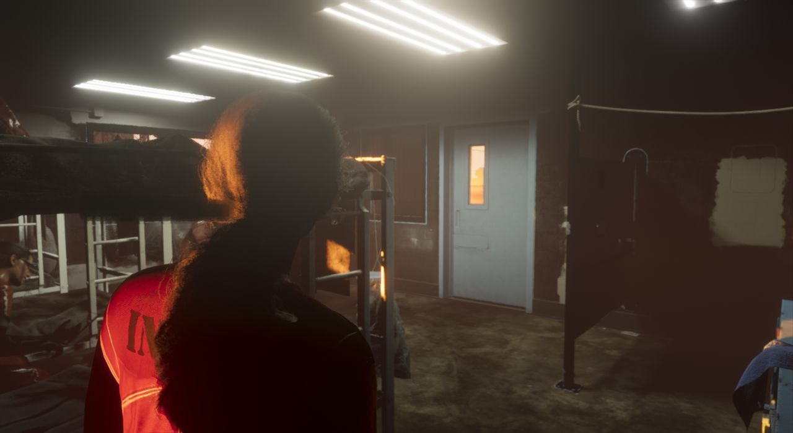
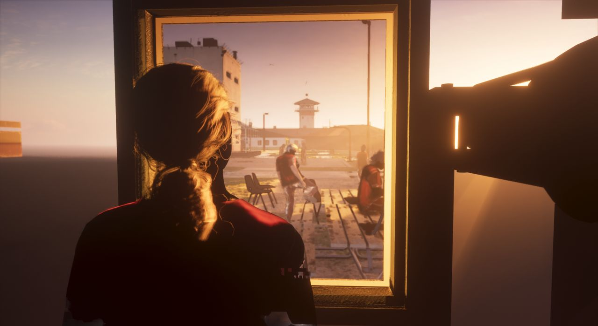
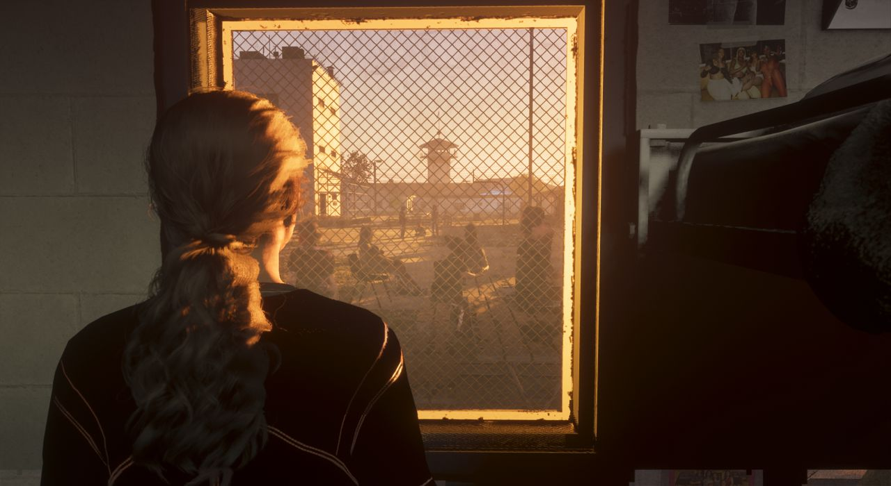

Frame rate, step by step
Bars are median fps over a 90-second steady window in the prologue's prison yard; full width = 30 fps.
Screenshots (2026-11-25, 8–10 fps)



Log
The card is now the ceiling measured
With the CPU side lighter, the card is ~80% busy at ~9 fps: about 95 ms of GPU work a frame, spread over ~9,300 small commands (~12 µs each). No single shader dominates. The 30 fps work moves to the card: the launcher's per-draw overhead, the 1,780 heavy mesh calls a frame that still take the clamp path (~38 ms), and the title's ~700 full waits a frame.
Leaving out the title's texture-only barriers reverted
The title's enhanced barrier groups all become a wait for every earlier write. We tried passing on only the ones that order shader writes: the walls vanished again and the lighting turned blue. Those full waits are doing real work, so they stay as they were.
Write watch: 4,000 refused kernel calls a frame copies 43 → 33 ms
Asking Windows which pages the title wrote made ~4,000 calls a frame that fail (memory that is not write-watched), the same ranges every frame, uncounted. A refused range is now remembered until the title's memory map changes. Also: the shader cache is now keyed by the translator's code, not the whole executable, so a new build no longer translates every shader again.
Mesh launcher: 5.3 → 8.5 fps +60%
Every indirect mesh draw (~5,000 a frame) ran a compute pass of its own to bound its arguments, and the card switched from drawing to compute and back each time (~18 µs a call). We put a tiny amplification shader of ours in front of every translated mesh shader: it reads the title's record on the GPU, bounds it, and launches the mesh groups itself. GPU wait per frame fell from ~130 ms to ~20 ms. The CPU is now the bottleneck.
The missing walls fixed
With the launcher on, the cell's walls vanished. Not a barrier, not the arguments: we fed it records from the old path and they were still missing. The console's mesh shaders write up to 40 KiB of outputs, more than the 32 KiB D3D12 allows. The card draws them alone, but behind an amplification stage it drew nothing of the large ones. Bisecting by output size (16 / 24 / 28 / 32 KiB) put the cut between 24 and 28 KiB, so shaders over 24 KiB keep the old path (185 of ~960 pipelines).
Copy-queue fetch: 4.0 → 5.3 fps +33%
Memory the GPU wrote that the CPU must read was fetched behind newly submitted work. It now goes through a copy queue of its own, bounded by a fence that marks the last submission the card ran. Fetch waits: 94 → 7 ms.
Narrow waits: 2.2 → 4.0 fps +80%
The argument clamp waited on the whole GPU (a UAV barrier on every resource) twice per indirect call. With enhanced barriers it now waits for compute and copies only. GPU time 190 → 134 ms; the image is the same.
Tried and dropped reverted
Barrier-bounded argument windows (GPU time went up 2.5×: the title rewrites arguments between barriers); skipping card copy-backs by address (addresses change per run, textures broke); leaving copy-backs off (garbage on clothes). Each was measured, kept opt-in or removed.
Before / after: the wall bug


Where the frame goes now
| Part (per frame, ~110 ms) | Time | What it is |
|---|---|---|
| GPU work | ~95 ms | the card is ~80% busy: ~9,300 small commands a frame |
| CPU preparation | ~65–70 ms | translating the title's command lists; ~33 ms of it is bringing changed title memory to the card |
| Copy-back | ~35 ms | landing GPU-written memory back in the title's memory (on its own thread) |
30 fps means a 33 ms frame, on the card and on the CPU. The card's work is now the ceiling, and the first ~70 seconds after loading run at 1–3 fps while textures stream in.
Try it
You need your own copy of the game; this project ships no game files. Build the branch rozerex-fps and set these switches before scripts\play.ps1:
$env:VICTORY_CARD_BUFFERS_MIN_MB = "1" $env:VICTORY_CARD_BUFFERS_MB = "4096" $env:VICTORY_RELAY = "2" $env:VICTORY_WIDE_MERGE = "1" $env:VICTORY_WIDE_BACK = "1" $env:VICTORY_NARROW_WAITS = "1" $env:VICTORY_COPY_FETCH = "1" $env:VICTORY_MESH_LAUNCH = "1"
The first run after a new build translates every shader again and can draw some walls late; judge the image from the second run. Known problems: blocky artifacts in places, some textures arrive late, and the game's ray-traced lighting does not run yet.
Next
- Card-resident title memory: stop copying the same buffers every frame (the 45 ms).
- Copy-back overlapped with the next frame instead of in its path (the 40 ms).
- Spread command-list translation over cores.